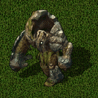

Mysticism
１．概要
MysticismスキルはUOSA(Stygian Abyss)より導入されたスキルです。
Mysticism魔法は16種類あり、それらは難易度ごとに8グループ（ランク）×2種類に分けられています。
魔法を使うには、 Mysticism spellbook[神秘の呪文書]、秘薬そしてマナが必要になります。
Mysticism spellbook[神秘の呪文書]、秘薬そしてマナが必要になります。
多くの魔法の効果は、MysticismとFocusまたはImbuingスキルによって変わります。

ランク1（難易度：-5.0、消費マナ：4）
Nether Bolt [In Corp Ylem]
- 秘薬 ：


- 詠唱時間 ： 0.75sec
- 効果 ： 地底に眠る力を矢としてターゲットへ放ち攻撃します。
- 基本ダメージ ： 11〜14（カオスダメージ）
INT、Inscription、魔法ダメージ+(SDI)さらにFocusまたはImbuingスキルによるダメージ修正を行います。
ダメージ計算 ＝ (基本ダメージ) * (1 + INT補正 + Inscription補正 + SDI補正) * (0.30 + max(focus, imbuing) * 0.009)
Healing Stone [Kal In Mani]
- 秘薬 ：


- 詠唱時間 ： 5.00sec
- 効果 ： ヒーリングストーン をバックパック内に創り出します。
ヒーリングストーンの仕様
- 地面に置くと消滅します。
- 毒状態でダブルクリックすると、解毒を試みます。毒状態でなければ、HPが回復します。
- ヒーリングストーンには治療ポイントが設定されており、解毒およびHP回復により減少していきます。
- ヒーリングストーンを連続してHP回復に使用するとき、2秒間の間隔が必要です。
現在、HP回復ポーションによる回復も、この制限に適用されています。
- HP回復直後はヒーリングストーンのエネルギーが消耗しており、完全に回復するには15秒必要です。
15秒以内に連続使用した場合、HP回復量にペナルティが発生します。
- ヒーリングストーンがある状態でヒーリングストーンの魔法を使用すると、新しいものに更新されます。
治療ポイント ＝ (Mysticism + Max(focus, imbuing)) * 1.25 [最大値 300]
HP回復量 ＝ {(Mysticism + Max(focus, imbuing)) / 6 + (1〜6)}×((経過時間)/15)
解毒成功時消費ポイント ＝ (毒レベル) * 15
解毒失敗時消費ポイント ＝ (毒レベル) * 5
解毒確率 ＝ 100 / (毒レベル) * ((Mysticism + Max(focus, imbuing))/240 [%]
mysticism=120 focus=120のときの解毒確率
| 毒レベル |
1 |
2 |
3 |
4 |
5 |
| 解毒確率 |
100/100 |
107/200 |
66/201 |
46/202 |
32/202 |
ランク2（難易度：8.0、消費マナ：6）
Purge Magic [An Ort Sanct]
- 秘薬 ：


- 詠唱時間 ： 1.00sec
- 効果 ： ターゲットに掛かっている保護効果を一つ消去します。保護効果にはそれぞれレベルが設定されており、スキルが低い場合、高レベルの保護効果は消去できません。
消去できる保護効果がない場合、8秒間マナコストを増加させ、その後カオス属性のダメージを与えます。
消去できる保護効果のレベル＝(Mysticism + Max(focus, imbuing))/40
マナコスト＝+(Mysticism + Max(focus, imbuing))×0.15 - (magicresist)×0.10 [%] [最大+36%]
基本ダメージ : 15〜19（カオスダメージ）
ダメージ計算 ＝ (基本ダメージ) * (0.30 + max(focus, imbuing) * 0.009)
INT、プロパティによる魔法ダメージ+の補正はありませんが、FocusまたはImbuingスキルによるダメージ修正を行います。
なお、この魔法によりマナコスト増加中のキャラクターが別の対象にダメージを与えると、その時点でマナコストが元に戻り、継続時間に応じて低減されたカオスダメージを受けます。
| レベル |
対応する保護効果 |
| 1 |
Magery : reactive armor, agility, cunning, strength
Chivalry : consecrate weapon
Necromancy : curse weapon
Bushido : confidence
Spellweaving : gift of renewal
Mysticism : enchant
その他 : agility potion, strength potion, fruit bowl(agility + cunning + strength)
|
| 2 |
Magery : bless
Chivalry : divine fury, enemy of one
Necromancy : wraith form
Spellweaving : immolating weapon, attunement, reaper form
|
| 3 |
Magery : protection, magic reflection
Necromancy : horrific beast
Spellweaving : arcane enpowerment
Mysticism : stone form
|
| 4 |
Necromancy : lich form
|
| 5 |
Necromancy : vampiric embrace
|
Enchant [In Ort Ylem]
- 秘薬 ：
- 詠唱時間 ： 5.00sec
- 効果 ： 次の一撃に効果を発揮する魔法を、一振りの武器に付与します。ただし、既に追加魔法の効果が付加された武器には使用できません。
エンチャントが付与された武器が外れた時点で、効果は無効となりますが、Mysticism, ImbuingまたはFocusスキルがともに80.1以上あれば、
詠唱可 + ファストキャスト-1が同時に付加され、魔法の詠唱で武器が外れることはなくなります。
追加効果 ： magic arrow, harm, fireball, lightning, dispelのうち1種類。魔法の種類により有効時間が補正されます。
追加効果が付加された武器は"
エンチャント"が表記されます。
追加効果の発動確率 ： 20 + (Mysticism + Max(focus, imbuing)) / 6 [%]
有効時間[sec] ： {20+(Mysticism + Max(focus, imbuing))*2/3} * (魔法補正)
魔法補正 ： Magic arrow=0.80, Harm=0.90, Fireball=0.65, Lightning=0.60, Dispel=1.00
Enchantにより追加された魔法のダメージの計算は、普通の追加魔法とは異なり、
FocusまたはImbuingスキルによる補正を行います。
FocusまたはImbuingスキルが120の場合、EIが60相当のダメージとなります。
ランク4（難易度：33.0、消費マナ：11、詠唱時間：1.50sec）
Animated Weapon [In Jux Por Ylem]
- 秘薬 ：

- 詠唱時間 ： 1.50sec
- 効果 ： 一振りの武器を召喚し、周囲の敵を攻撃させます。
召喚された武器生物のステータス
- コントロールスロット ： 4
- HP : 20 + (mysticisms + Max(focus, imbuing)) * 0.75
- Stamina : 10 + (mysticisms + Max(focus, imbuing)) * 0.5
- Mana : なし
- STR : 10 + (mysticisms + Max(focus, imbuing)) * 0.5
- DEX : 10 + (mysticisms + Max(focus, imbuing)) * 0.5
- INT : 10
- 抵抗値 : (40〜50/30〜40/30〜40/100/20〜30)
- ダメージ : (mysticisms + Max(focus, imbuing))に依存し、最小で7〜8、最大で14〜18
- 攻撃属性 : 60 /0/0/20/20
- wrestling : (mysticisms + Max(focus, imbuing)) * 0.5
- resisting spell : (mysticisms + Max(focus, imbuing)) * 0.5
- tactics : tactics * 0.5
- anatomy : anatomy * 0.5
- 有効時間 : 10 + (mysticisms + Max(focus, imbuing)) * 0.5 [sec]
| Mys+Max(Imb, Foc) |
ダメージ |
| 〜59.9 |
7〜8 |
| 〜69.9 |
8〜9 |
| 〜89.9 |
8〜10 |
| 〜119.9 |
9〜11 |
| 〜139.9 |
10〜12 |
| Mys+Max(Imb, Foc) |
ダメージ |
| 〜149.9 |
10〜13 |
| 〜179.9 |
11〜14 |
| 〜209.9 |
12〜15 |
| 〜239.9 |
13〜17 |
| 240 |
14〜18 |
Stone Form [In Rel Ylem]
- 秘薬 ：

- 詠唱時間 ： 1.50sec
- 効果 ： 術者を石のように強固にします。抵抗値が増加し受けるダメージが減少しますが、移動速度や攻撃速度が減少します。
また、毒・麻痺・睡眠・流血・窒息・ステータス低下に抵抗し、効果を無効にします。
プロパティ変化
- 速度 ： -10%
- ファストキャスト ： -2
- 全属性抵抗値 ： + (mysticisms + Max(focus, imbuing)) / 24 [%]
- 全属性抵抗値の最大値 ： + (mysticisms + Max(focus, imbuing)) / 48 [%]
- 状態変化抵抗確率 ： (mysticisms + Max(focus, imbuing)) / 2.4 [%]
- 武器ダメージは増加していないようです。
ランク8（難易度：83.0、消費マナ：50）
Nether Cyclone [Grav Hur]
- 秘薬 ：
- 詠唱時間 ： 2.50sec
- 効果 ： ターゲットとその周囲1タイルの全てに致命の疾風を吹き付けます。この魔法攻撃を受けたとき、一定割合のスタミナおよびマナを失います。
- ダメージ ： 52〜56（カオスダメージ）
INT、Inscription、魔法ダメージ+(SDI)さらにFocusまたはImbuingスキルによるダメージ修正を行います。
対象範囲内の生物数による低減はありません。
- スタミナおよびマナ減少率 ： (Mysticism)/12 + Max(focus, imbuing))/12 - (Magicresist)/10 [％]
キャラクターのスタミナおよびマナの最大値が減少率のもととなります。この効果とHPダメージによるスタミナ減少は重複します。
Rising Colossus [Kal Vas Xen Corp Ylem]
- 秘薬 ：


- 詠唱時間 ： 2.50sec
- 効果 ： 石像の巨人を召喚し、周囲の敵を攻撃させます。
召喚された巨人のステータス
- コントロールスロット ： 5
- HP : 200 + (Mysticism + Max(focus, imbuing)) * 1.125
- Stamina : 30 + (Mysticism + Max(focus, imbuing)) * 0.75
- Mana : 50 + (Mysticism + Max(focus, imbuing)) * 0.75
- STR : 600 + (Mysticism + Max(focus, imbuing)) * 0.75
- DEX : 30 + (Mysticism + Max(focus, imbuing)) * 0.75
- INT : 50 + (Mysticism + Max(focus, imbuing)) * 0.75
- 抵抗値 : (65〜70/50〜55/50〜55/100/65〜70)
- ダメージ : (Mysticism + Max(focus, imbuing))に依存し、最小で7〜8、最大で19〜24（下表参照）
- 攻撃属性 : 100 /0/0/0/0
- wrestling : (Mysticism + Max(focus, imbuing)) / 2
- resisting spell : (Mysticism + Max(focus, imbuing)) / 2
- tactics : (Mysticism + Max(focus, imbuing)) / 2
- anatomy : (Mysticism + Max(focus, imbuing)) / 2
- 有効時間 : (Mysticism + Max(focus, imbuing)) / 4 [sec]
| Mys+Max(Imb, Foc) |
ダメージ |
| 〜93.0 |
7〜8 |
| 〜106.3 |
8〜10 |
| 〜119.6 |
9〜11 |
| 〜132.9 |
10〜12 |
| 〜139.6 |
11〜13 |
| Mys+Max(Imb, Foc) |
ダメージ |
| 〜146.2. |
11〜14 |
| 〜159.5 |
12〜15 |
| 〜172.8 |
13〜16 |
| 〜186.1 |
14〜17 |
| 〜199.4 |
15〜19 |
| Mys+Max(Imb, Foc) |
ダメージ |
| 〜212.7 |
16〜20 |
| 〜226.0 |
17〜21 |
| 〜232.7 |
18〜22 |
| 〜239.3 |
18〜23 |
| 239.4〜 |
19〜24 |
